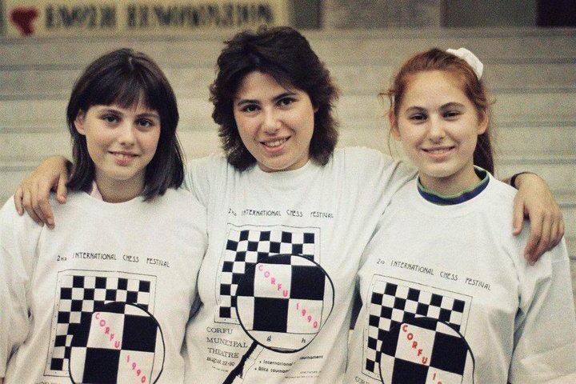
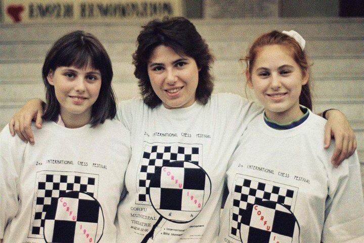

Essay — The History of Chess
Below is your full report, with animated pieces drifting around the paragraphs.
Chess is a board game well known around the whole world. Its marvelous history dates to ancient India, and its captivating nature has it to conquer the entire planet. Plenty of people consider this game their hobby, enjoying games with even strangers, offering a healthy source of intellectuality and fun. Nevertheless, recent studies show the cognitive benefits of chess, as strategy, decision making, and time management, which are crucial cognitive aspects valued by chess players. To understand the underlying foundations of chess, we must revise how history has evolved to what know today.
At this point, it’s important to understand how chess has shaped its path throughout the history, as it is no coincidence that it is one of the most popular board games in the world. The history of this games is closely related to the political, economic, and social conflicts of the 20th century, since its great precursors such as Capablanca, Steinitz and Petrosian managed to stablish a rivalry for knowledge and intellectuality that is still present nowadays.
This context coincides with the nascent Cold War between the US and the Soviet Union, where these countries fought for the global control and reputation trough the arms race, aeronautics and, of course, chess. World champions such as Karpov and Botvinnik dominated the chess scene for many years, while the US initially lagged back. The Soviet Union School of Chess was an intellectual and political institution, where the board game promoted Soviet ideology to the population. It is still possible to see vestiges of the Soviet School of Chess in the contemporary Russian society.
However, since the US was not going to be left and forgotten behind in this topic, a legend named Robert James Fisher, or more commonly known as “Bobby” Fisher appeared in the scene. He supported the climax of the era in 1972 through his rivalry with the Soviet Boris Spassky. Both managed to show society the ideological differences that the world presented at the time. While Bobby Fisher showed the freedoms that the US promised the world, Boris Spassky presented the leftist ideology based on the historical traditions of the Soviet Union. This polarization in chess was ultimately resolved by Bobby fisher by winning the games, and so, achieving victory for the United States and creating a symbolic and intellectual image of Fischer that cannot be forgotten for the chess society.
Years later, and with the creation of the new technologies, specifically artificial intelligence, the struggle between man and machine makes its first appearance. In this case, a new legend of the game appears to show his supremacy, Garry Kasparov, another Soviet Chess player who stablished himself as the undisputed world chess champion for many years, demonstrating once again the chess quality that Soviet Union (currently known as the Russian School of Chess) proposed. Since Kasparov had no rivals, and this is the pinnacle of artificial intelligence, IBM proposed its artificial intelligence called “Deep Blue”, where in 1997 Kasparov and Deep Blue played several games. With Deep Blue finally emerging victorious. This was a significant historical moment for chess, because it was the day known as “the day the machine beat man”.
Currently, there’re many artificial intelligences such as Stockfish, AlphaZero, Komodo, etcetera, which possess analytical capabilities far superior to humans, so that not even the undisputed champion of the time, Magnus Carlsen can defeat them. That was a turning point in the world of chess, as it allowed this simple board game to be brought into the digital world, where platforms like Chess.com and Lichess.org are among the most popular for playing with everyone.
Due to this digital revolution, chess has been included in various online platforms, allowing for profit-making through content creation. Without going any further, chess has managed to be considered an E-Sport in which global competitions are held with great exponents of the game, making it economically sustainable over time. In addition to its increased globally popularity, it has algo opened new doors for the women in the game. Due to the time of its creation, chess was unfair to the inclusion of women. They were not considered intelligent enough to participate, as it was considered a man’s game, with rules for men, and regulations for men. In history, the Polgar family demonstrated that women could be incredibly good at chess, so leaving them out was incorrect. Polgar family were precursors to female integration in chess, allowing the total inclusion of the population in chess.
Today, the chess revolution has motivated scientist to study the benefits of chess for the entire population to integrate it into public policy in countries to promote people’s cognitive development. It has been shown that 12 weeks of chess training with two 60-minute sessions improved cognition and quality of life in older adults, which is a key result for the regulation of stimulating cognitive activity through chess, which is a key agent for maintaining a good cognitive, social, and psychological state during the aging process (Cibeira, 2021). This result is crucial because the rates of mental illness in Chile are not encouraging. Efforts have been focused solely on treating the disease buy not much on preventing it. The prevalence of dementia at age 60 is estimated to be 1% doubling every 5 years, reaching nearly 30% by age 80 (MINSAL, 2023)
There is still no law in force in Chile that allows for the inclusion of extracurricular activities in schools beyond regular classes, and there’s a lack of research at the national level on how the inclusion of chess in society would help reduce the prevalence of mental illness, especially among older adults. However, institutions such as the IND (National Sports Institute) include chess as a sport at the community, regional, and national levels. Together with AJEFECH (National Chess Federation of Chile), they allow the creation of national tournament to promote chess.